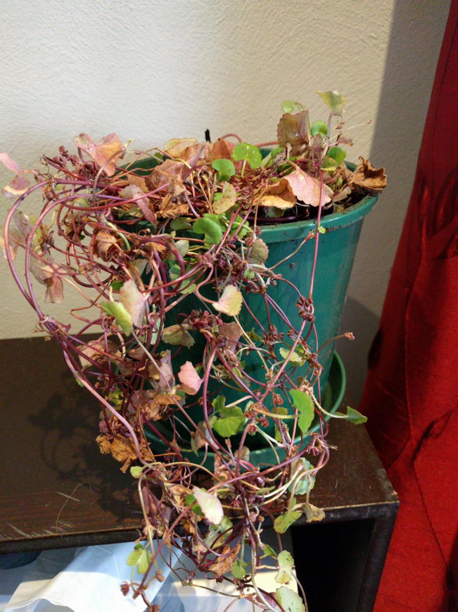

Good Noms
Gnoms
>
Garden
>
Plants
> Gotu Kola
Info From Tag
In Asian countries this is a favourite in curries.
Growing tips: Best in rich, moist soil and partial shade such as the edge of a pond.
Part Used: Leaves.
15cm x 30cm
Spacing 20-30cm
Culinary use
